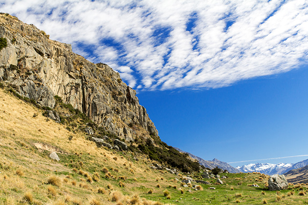

Lord Of The Rings: The Return Of The King
Main Content

JRR Tolkien’s epic trilogy finally reaches its spectacular conclusion with eye-popping battles and, maybe, one too may endings.
West of Christchurch, Mount Sunday is a rocky outcrop rising above a plain left when ancient glaciers carved out the Rangitata River valley in the centre of South Island. It was on Mount Sunday, on the Mount Potts Station, the city of ‘Edoras’ in the kingdom of ‘Rohan’ was built. The mount is a couple of miles northwest of Mt Potts Lodge, west of Hakatere Potts Road.
Some 50 miles to the southwest, the Ben Ohau Station, in the Mackenzie Basin, in the Southern Alps, about five miles northwest of Twizel on State Route 8 at the southern tip of Lake Pukaki, provided the ‘Pelennor Fields’, and the foothills of the ‘White Mountains’, for the climactic battle scenes.
Scenes from The Hobbit were filmed in this area, around Lake Pukaki on remote locations near Mount Cook. More recently, Ben Ohau was transformed into 'Colorado' for John Maclean's 2015 Slow West, with Michael Fassbender and Kodi Smit-McPhee.
Queen Elizabeth Park, MacKays Crossing, on the Kapiti Coast north of Paekakariki, was used to stage the more of the battle of ‘Pelennor Fields’, with the fallen oliphaunt. It's on State Highway 1, about 30 miles north of Wellington on the North Island.
Visit Info
Visit The Film Locations
New Zealand
Visit: New Zealand
NORTH ISLAND
Visit: Wellington
Flights: Wellington International Airport, Stewart Duff Drive, Rongotai, Wellington 6022 (tel: +64.4.385.5100)
SOUTH ISLAND
Visit: Mt Potts Lodge, 2131 Hakatere Potts Road, Ashburton Lakes, Ashburton 7771 (tel: 00.64.3.669.4610)
Visit: Ben Ohau Station, 527 Glen Lyon Road, Twizel 7999 (tel: 00.64.3.435.0791)